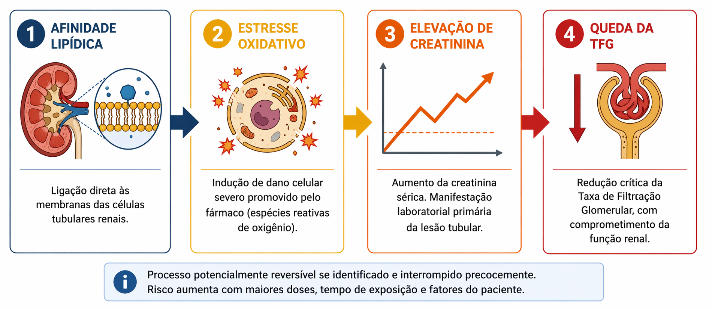

Antibacterianos que atuam na membrana bacteriana
Os antibacterianos que atuam diretamente na membrana bacteriana produzem efeito rápido e, em geral, bactericida, ao comprometer a integridade estrutural e o gradiente eletroquímico celular. Diferentemente de mecanismos altamente seletivos, como a inibição da síntese da parede celular, a interferência na membrana envolve estruturas cuja organização básica compartilha princípios físico-químicos com as membranas celulares humanas 2,3.
Essa proximidade estrutural reduz a margem de seletividade farmacológica e ajuda a explicar o perfil de toxicidade observado nessa classe.
As polimixinas constituem o exemplo mais representativo desse mecanismo. Esses fármacos interagem com o lipopolissacarídeo da membrana externa de bacilos Gram-negativos, desorganizando a bicamada lipídica e levando à morte bacteriana. Entretanto, a afinidade por componentes lipídicos não é completamente restrita à bactéria 2,8.
A interação com membranas das células tubulares renais e a indução de estresse oxidativo contribuem para o risco significativo de nefrotoxicidade associado a essa classe. Clinicamente, essa toxicidade manifesta-se por elevação progressiva da creatinina e redução da taxa de filtração glomerular, podendo exigir ajuste de dose ou suspensão do tratamento 8.

O risco é dependente da exposição e influenciado por fatores como função renal prévia, duração da terapia e uso concomitante de outros medicamentos nefrotóxicos. Em cenários de infecção por microrganismos multirresistentes, nos quais as polimixinas frequentemente são utilizadas como terapia de resgate, a avaliação do equilíbrio entre benefício microbiológico e risco de toxicidade torna-se central 8.
Além da nefrotoxicidade, eventos neurológicos também foram descritos com essa classe, incluindo parestesias, fraqueza muscular e, raramente, bloqueio neuromuscular. Esses efeitos refletem a possível interferência em propriedades das membranas neuronais e das junções neuromusculares 8.
Outro antibacteriano que atua sobre a membrana bacteriana é a daptomicina. Esse fármaco insere-se na membrana citoplasmática de bactérias Gram-positivas, promovendo despolarização celular e morte bacteriana 15.
Em humanos, a principal manifestação adversa associada ao uso prolongado é a elevação da creatinofosfoquinase, podendo ocorrer miopatia em casos raros 16.
O risco de toxicidade muscular aumenta quando a daptomicina é utilizada por períodos prolongados ou em associação com medicamentos que também apresentam potencial miotóxico, como estatinas. Por essa razão, a monitorização de creatinofosfoquinase pode ser recomendada durante tratamentos mais longos 16.
De forma geral, o padrão de toxicidade dessa classe segue uma lógica previsível, mostrando que quanto mais fundamental e universal for a estrutura alvo, menor tende a ser a margem de seletividade estrutural.